UDN
Search public documentation:
CascadeUserGuideKR
English Translation
日本語訳
中国翻译
Interested in the Unreal Engine?
Visit the Unreal Technology site.
Looking for jobs and company info?
Check out the Epic games site.
Questions about support via UDN?
Contact the UDN Staff
日本語訳
中国翻译
Interested in the Unreal Engine?
Visit the Unreal Technology site.
Looking for jobs and company info?
Check out the Epic games site.
Questions about support via UDN?
Contact the UDN Staff
UE3 홈 > 언리얼 에디터와 툴 > 언리얼 캐스케이드 사용 안내서
UE3 홈 > 파티클과 이펙트 > 파티클 시스템 > 언리얼 캐스케이드 사용 안내서
UE3 홈 > FX 아티스트 > 언리얼 캐스케이드 사용 안내서
UE3 홈 > 파티클과 이펙트 > 파티클 시스템 > 언리얼 캐스케이드 사용 안내서
UE3 홈 > FX 아티스트 > 언리얼 캐스케이드 사용 안내서
언리얼 캐스케이드 사용 안내서
문서 변경내역: Alan Willard 작성. Joe Graf, Richard Nalezynski, Jeff Wilson 업데이트. 홍성진 번역.
개요
캐스케이드 열기
캐스케이드 인터페이스
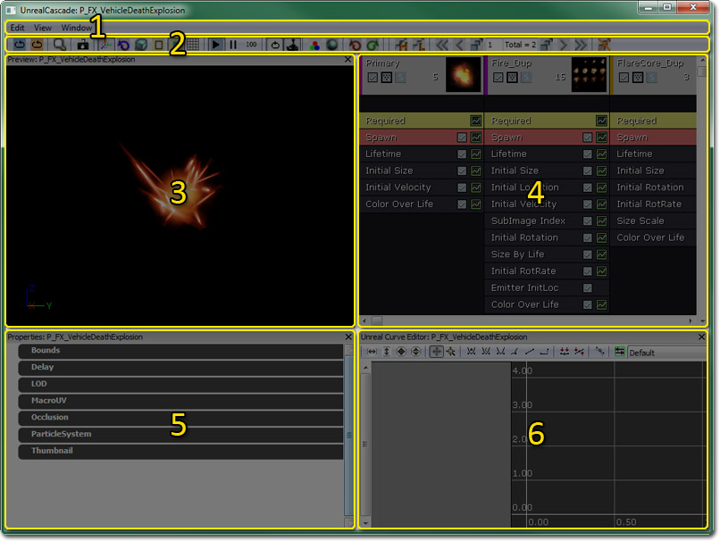
- 메뉴바 - 시각화 및 내비게이션 툴입니다.
- 툴바 - 시각화 및 내비게이션 툴입니다.
- 미리보기 패널 - 현재 파티클 시스템을 (그 시스템 내에 포함된 이미터를 전부 포함하여) 표시합니다. Sim 툴바 옵션의 콘트롤은 시뮬레이션 속도를 설정합니다.
- 이미터 목록 - 이 패널에는 현재 파티클 시스템의 이미터 전체 목록이 담겨 있으며, 그 이미터 내 모든 모듈 목록도 포함되어 있습니다.
- 속성 패널 - 이 패널에는 현재 파티클 시스템, 파티클 이미터, 파티클 모듈의 속성이 표시되어 확인하고 변경할 수 있습니다.
- 커브 에디터 - 이 그래프 에디터에는 상대 또는 절대 시간에 걸쳐 변경되고 있는 속성이 표시됩니다. 그래프 에디터에 모듈을 추가하면, 이것이 나타낼 것을 조절하기 위한 부분이 됩니다. (문서 후반부에 기술하겠습니다)
메뉴바
편집
- 최저 LOD 재생성 - 최고 LOD 값의 미리지정된 퍼센트 값을 사용하여 최저 LOD를 재생성합니다.
- 패키지 저장 - 파티클 시스템을 담고 있는 패키지를 저장합니다.
보기
- 축 원점 보기 - 미리보기 패널 내 월드 원점에 축 마커 표시를 토글합니다.
- 파티클 수 보기 - 미리보기 패널 내 파티클 시스템의 각 이미터에 대한 파티클 수 통계 표시를 토글합니다.
- 파티클 이벤트 수 보기 - 미리보기 패널 내 파티클 시스템의 각 이미터에 대한 파티클 이벤트 통계 표시를 토글합니다.
- 파티클 시간 보기 - 미리보기 패널 내 파티클 시스템의 각 이미터에 대한 파티클 시간 통계 표시를 토글합니다.
- 파티클 거리 보기 - 설명 필요.
- 지오메트리 보기 - 미리보기 패널 내 들어선(stand-in) 스태틱 메시 표시를 토글합니다. 콜리전같은 특정 이미터 이펙트를 시험하기에 좋을 수 있습니다.
- 지오메트리 속성 보기 - 들어선 지오메트리에 대한 속성 창을 열어 그 속성과 사용중인 메시를 변경할 수 있도록 합니다.
- 캠 위치 저장 - 미리보기 패널의 카메라 시점 화면을 콘텐츠 브라우저 내 파티클 시스템에 대한 썸네일로 저장합니다.
- 모션 반경 설정 - 설명 필요.
창
- 속성: - 속성 패널 표시를 토글합니다.
- 언리얼 커브 에디터: - 커브 에디터 표시를 토글합니다.
- 미리보기: - 미리보기 패널 표시를 토글합니다.
툴바
아래와 같은 툴바도 있습니다: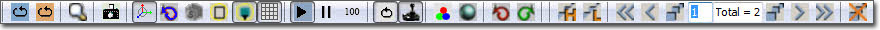
툴바에는 다음 명령이 포함되어 있습니다. (왼쪽에서 오른쪽 순):| 아이콘 | 이름 | 설명 |
|---|---|---|
| 시뮬 재시작 | 미리보기 창의 시뮬레이션을 리셋시킵니다. | |
| 레벨에서 재시작 | 파티클 시스템과, 레벨에 있는 이 시스템의 인스턴스도 리셋시킵니다. | |
 | 콘텐츠 브라우저에서 찾기... | 콘텐츠 브라우저를 열고 현재 파티클 시스템을 선택합니다. |
| 썸네일 이미지 저장 | 미리보기 패널의 카메라 시점 화면을 콘텐츠 브라우저 내 해당 파티클 시스템에 대한 썸네일로 저장합니다. | |
| 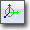 | 선회 모드 토글 | 미리보기 뷰포트 카메라를 파티클 시스템 주변 선회 / 자유 이동 사이로 토글합니다. |
| 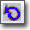 | 모션 토글 | 이미터 상의 모듈로부터의 모션 이펙트를 토글합니다. |
| 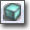 | 뷰 모드 변경 | 미리보기 패널에 사용되는 뷰모드를 순환시킵니다. |
 | 경계 토글 | 미리보기 패널 내 파티클 시스템의 현재 경계 표시를 토글합니다. |
 | 포스트프로세스 토글 | 미리보기 패널 내 캐스케이드 포스트 프로세스 체인 사용을 토글합니다. |
| 그리드 토글 | 미리보기 패널 내 그리드 표시를 토글합니다. | |
 | 플레이 | 미리보기 뷰포트 내 시뮬레이션을 재생합니다. |
| 일시정지 | 시뮬레이션을 일시정지합니다. | |
| 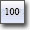 | 시뮬 속도 설정 | 시뮬레이션 재생 속도를 순환시킵니다. |
 | 루프 시스템 토글 | 루프 설정되지 않은 이미터도, 미리보기 뷰포트에서 강제로 반복되게 합니다. |
 | 실시간 토글 | 미리보기 뷰포트 내 이미터를 실시간으로 미리봅니다. |
 | 배경색 | 미리보기 뷰포트의 배경색을 사용자가 변경하도록 합니다. |
| 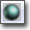 | 와이어프레임 구체 토글 | |
 | 되돌리기 | 방금 수행한 명령을 취소합니다. |
| 다시하기 | 방금 취소한 명령을 다시합니다. | |
| 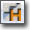 | 최고 LOD를 복제하여 최저 LOD 재생성 | 최고 LOD를 복제하여 최저 LOD를 재생성합니다. |
| 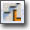 | 최저 LOD 재생성 | 최고 LOD 값의 미리지정된 퍼센트 값을 사용하여 최저 LOD를 재생성합니다. |
| 최고 LOD 레벨로 점프 | 최고 LOD를 로드합니다. | |
 | 상위 LOD 레벨로 점프 | 현재보다 윗단계 LOD를 로드합니다. |
 | 현재 LOD 앞에 LOD 추가 | 현재 로드된 LOD 위에 새 LOD를 추가합니다. |
 | 현재 LOD 뒤에 LOD 추가 | 현재 로드된 LOD 뒤에 새 LOD를 추가합니다. |
| 하위 LOD 레벨로 점프 | 아랫단계 LOD를 로드합니다. | |
 | 최저 LOD 레벨로 점프 | 최저 LOD를 로드합니다. |
| 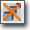 | LOD 삭제 | 현재 로드된 LOD를 삭제합니다. |
미리보기 패널
미리보기 패널에서는 현재 파티클 시스템이 게임내에서 어떻게 렌더링되는가 그 모습을 그대로 표현해 줍니다. 캐스케이드에서 파티클 시스템에 가하는 변경사항에 대한 피드백을 실시간으로 보여주기도 합니다. 완전히 렌더링된 미리보기 이외에도 라이팅제외, 텍스처 밀도, 오버드로, 와이어프레임 뷰모드는 물론 파티클 시스템의 현재 경계같은 정보도 표시할 수 있습니다.이미터 목록
이미터 목록에는 캐스케이드에서 편집되고 있는 파티클 시스템 내에 포함된 각 파티클 이미터가 포함됩니다. 모든 이미터가 가로형으로 나열되며, 각 열은 시스템 내에 포함된 파티클 이미터 하나를 나타냅니다. 각 열은 이미터 블록으로 이루어져 있으며, 모듈 블럭이 몇이든 잇따릅니다. 이미터 블럭의 모양은 아래와 같습니다: 이미터 블럭에 표시되는 버튼은 다음과 같습니다. (왼쪽에서 오른쪽):
/
이 버튼은 이미터를 끄고/켭니다. 첫 이미지는 이미터가 켜졌을 때, 둘째 이미지는 꺼졌을 때 표시됩니다. 꺼졌을 때는 Tick 이나 Render 가 호출되지 않는다는 점이 중요하겠습니다.
가운데 버튼은 그 이미터에 대한 렌더링 모드입니다. 클릭하면 사용가능한 렌더링 모드 중 다음 것으로 전환됩니다. 지원되는 아이콘은 다음과 같습니다:
이미터 블럭에 표시되는 버튼은 다음과 같습니다. (왼쪽에서 오른쪽):
/
이 버튼은 이미터를 끄고/켭니다. 첫 이미지는 이미터가 켜졌을 때, 둘째 이미지는 꺼졌을 때 표시됩니다. 꺼졌을 때는 Tick 이나 Render 가 호출되지 않는다는 점이 중요하겠습니다.
가운데 버튼은 그 이미터에 대한 렌더링 모드입니다. 클릭하면 사용가능한 렌더링 모드 중 다음 것으로 전환됩니다. 지원되는 아이콘은 다음과 같습니다:
| 이미터가 정상적으로 렌더링됩니다. | |
| 이미터가 파티클 위치에 십자선으로 렌더링됩니다. | |
 | 이미터가 파티클 위치에 점으로 렌더링됩니다. |
| 이미터가 렌더링되지 않습니다. |
 우상단 아이콘은 관련 모듈 데이터를 커브 에디터로 전송하는 버튼입니다. 우하단 아이콘은 모듈을 켜고/끄는 버튼입니다. (주: 이미터에 공유된 모듈 중 하나라도 꺼지면 모든 이미터에 꺼집니다!)
마지막 버튼은 미리보기 뷰포트에 3D 표현으로 렌더링 가능한 모듈에서만 나타납니다.
/
왼쪽 이미지는 3D 미리보기 가 표시됨을, 오른쪽은 현재 꺼져 있음을 나타냅니다.
우상단 아이콘은 관련 모듈 데이터를 커브 에디터로 전송하는 버튼입니다. 우하단 아이콘은 모듈을 켜고/끄는 버튼입니다. (주: 이미터에 공유된 모듈 중 하나라도 꺼지면 모든 이미터에 꺼집니다!)
마지막 버튼은 미리보기 뷰포트에 3D 표현으로 렌더링 가능한 모듈에서만 나타납니다.
/
왼쪽 이미지는 3D 미리보기 가 표시됨을, 오른쪽은 현재 꺼져 있음을 나타냅니다.
커브 에디터
그래프에 모듈 추가하기
그래프 에디터에 모듈 추가하기는 매우 간단합니다. 모듈의 왼편에 나타나는 녹색 박스로 그래프 에디터에 그 모듈을 추가시킵니다. 그래프 에디터에 나타나는 모듈의 색은 모듈이 생성될 때 임의로 결정됩니다. 이를 변경하려면 변경하려는 모듈에 대한 속성 창에서 Cascade 속성 세트를 열고, 색을 설정하면 됩니다.그래프 조작하기
그래프 에디터의 오른편 항목에 나타나는 노랑 박스는 해당 모듈에 대한 스플라인 렌더링을 토글시키는 것입니다. 그 항목 중 하나에 우클릭하면 그래프에서 해당 항목을 제거할 수 있습니다.그래프에 점 만들기
다수의 점 등을 추가하기 전에 변경하려는 분포 유형이 'curve' (예로 DistributionFloatConstantCurve) 여야 한다는 점에 유의하시기 바랍니다. 그래프 에디터에 점을 만들려면, 원하는 값에 대한 스플라인 위에 Ctrl-좌클릭하면 됩니다. 이 작업을 가장 쉽게 하려면, 위에서 말한 체크박스를 사용하여 다른 모듈을 전부 끄는 것입니다. 모든 모듈은 시간 0 지점에 값이 0 인 키 하나로 시작합니다. 시간선의 스플라인 아무데나 Ctrl+좌클릭하면 그 곳에 점이 만들어집니다. 이 점은 마음대로 끌 수 있으나, 스플라인이 벡터(XYZ)를 나타낸다면 값이 아닌 시간에 대한 3 키 전부가 이동됩니다. 키포인트에 우클릭하면 메뉴가 열리며, 해당 키포인트의 Time 또는 Value 값을 수동으로 입력할 수 있습니다. 컬러 커브 내의 키라면, 색 선택기를 사용하여 그 색을 선택할 수도 있습니다. 모듈이 ColorOverLife 인 경우, 렌더링되는 스플라인은 그 시간의 현재 색이 반영되는 반면, 점은 그 스플라인에 대한 특정 채널을 반영한 색이 됩니다.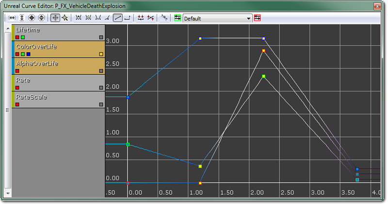
자세한 것은 Curve Editor User Guide KR 페이지를 참고하시기 바랍니다.속성 패널
속성 패널은 표준 UnrealEd 속성(에 고급 검색과 즐겨찾기 기능만 빠진) 창입니다. 이 패널에 표시되는 속성은 캐스케이드에 현재 선택되어 있는 것에 따라 달라집니다. 선택된 것이 없는(, 또는 파티클 시스템 자체가, 즉 이미터 목록 내의 맥락 메뉴를 통해 선택된) 경우 파티클 시스템 자체에 대한 속성이 표시됩니다. 파티클 이미터, 즉 이미터 블록이 선택된 경우 해당 파티클 이미터에 대한 속성이 표시됩니다. 파티클 모듈이 선택된 경우, 해당 파티클 모듈에 대한 속성이 표시됩니다.콘트롤
마우스 콘트롤
캐스케이드의 마우스 콘트롤은 다음과 같습니다: 미리보기 패널에서, 좌클릭은 파티클 시스템 중앙을 축으로 씬을 회전시키며, 우클릭은 줌인/아웃 입니다. 이미터 패널에서, 이미터나 모듈에 좌클릭하면 이미터를 선택합니다. 모듈을 좌클릭 드래깅하면 끌어 놓는 곳 아래에 이미터가 있는 경우 그 곳으로 해당 모듈을 이동시킵니다. 모듈을 스택 내 위 아래로 옮기거나, 다른 이미터로 옮기는 데 사용할 수 있습니다. 우클릭의 경우 (빈 공간에 클릭했을 때는) 새 이미터 생성, (이미터 내 빈 공간에 클릭했을 때는) 새 모듈 생성, (모듈 이름에 클릭했을 때는) 모듈 삭제, (상단 주 이미터 모듈에 클릭했을 때는) 전체 이미터 삭제 등, 맥락에 따라 달라지는 대화창이 열립니다. Shift+좌클릭 후 드래깅하면 이미터 사이로 모듈을 인스턴싱하며, 모듈 명 옆에 + 로 표시되고, 모듈엔 같은 색이 공유됩니다. Ctrl+좌클릭 후 드래깅은 소스 이미터에서 타겟으로 모듈을 복사합니다. 가운데클릭 후 드래깅은 이미터 패널 내 패닝입니다. 이미터 패널에서 이미터를 선택한 상태로, 좌/우 방향 키를 사용하면 전체 파티클 시스템에서의 배치 순서가 변경됩니다. 이미터는 캐스케이드에서 파티클 시스템이 나타나는 좌-우 순으로 업데이트 및 렌더링됩니다. 속성 패널에서, 좌클릭은 필드를 선택하거나 속성을 펼칩니다. 그래프 뷰에서는, 어떤 모드에 있는가에 따라 콘트롤이 바뀝니다. 그래프 뷰를 조작하는 모드는 둘 있습니다: 패닝 모드: 좌클릭 드래그는 뷰를 이동하며, 마우스휠은 균등 줌 인/아웃 입니다. 줌 모드: 좌클릭 드래그는 그래프 수직 스케일 조절, 우클릭 드래그는 그래프 수평 스케일 조절입니다. 그래프에 스플라인이 이미 존재하는 경우, 해당 스플라인 위에 좌클릭하면 그 지점에 키가 생깁니다. 키를 좌클릭후 끌면 움직일 수 있으나, 그래프상의 값이 여럿인 (Color Over Lifetime 의 RGB 같은) 모듈에서는, 키가 생성될 때마다 그 모듈의 다른 스플라인에도 추가됩니다. 이 키들은 다른 것과 항시 동일하게 유지되기에, 빨강 쪽의 키를 시간 선상의 앞뒤로 움직인 경우, 녹색과 파랑의 키도 (세로는 아니고) 가로로 이동될 것입니다. 그래프 뷰의 버튼 둘은 Fit 버튼입니다. 왼쪽의 버튼은 현재 보이는 스플라인의 가로 크기에 맞춰 뷰의 줌과 패닝을 조절하고, 오른쪽의 버튼은 똑같은 작업을 세로 크기에 맞춥니다.파티클 시스템 만들기
스프라이트 이미터 만들기
기본 이미터 옵션
모듈 만들기
이미터 복사하기
모듈
모듈 정보
속성을 시간에 따라 변하는 분포 유형으로 바꾸면, 일부 모듈은 '상대 시간'을, 일부는 '절대 시간'을 사용합니다. (분포 관련 자세한 내용은 아래 참고)- 절대 시간은 근본적으로 이미터 시간을 포함합니다. 이미터에 2 초의 루프를 3 회 구성해 뒀다면, 그 이미터 내 모듈의 절대 시간은 0 에서 2 초까지 세 번 실행됩니다.
- 상대 시간은 0 에서 1 사이의 값으로, 각 파티클의 Lifetime 을 가리킵니다.
모듈 상호작용
모듈은 이미터 내 스택상의 위치에 따라 서로 상호작용합니다. 예를 들어 Initial Location 의 Min(x=2, y=2, z=2), Max(x=-2, y=-2, z=-2) 인 이미터를 만들면 아주 작은 박스 안에 파티클이 스폰되며, Initial Velocity 내 StartVelocityRadial 의 Min/Max 값이 100 으로 설정된 경우 파티클이 박스 중심에서 멀어지도록 할 것입니다. Initial Location 에 X, Y, Z Min/Max 값이 100 인 것을 또하나 추가하면, 전체 이미터를 모든 방향으로 100 유닛 더 멀리 이동시킵니다만, 파티클은 여전히 새로 위치된 박스의 중심에서 움직일 것입니다. 둘째 Initial Location 모듈을 Initial Velocity 모듈 위로 옮기면, 파티클이 오프셋 위치가 아닌 시스템의 원점에서 움직이게 할 것입니다.분포 유형
자세한 것은 Distributions KR 페이지를 참고해 주시기 바랍니다.파티클 시스템 LOD (Level of Detail)
캐스케이드 LOD 콘트롤
캐스케이드 툴바의 다음 부분은 LOD 콘트롤을 다룹니다. 캐스케이드 LOD 콘트롤 각 콘트롤에 대한 분석은 아래와 같습니다.
Jump to Highest LOD Button 최고 LOD 레벨로 점프
최고 LOD 레벨로 점프 버튼이 눌리면 시스템은 최고 스태틱 LOD 레벨로 설정됩니다.
Jump to Higher LOD Button 현재 LOD 앞에 LOD 추가
현재 LOD 앞에 LOD 추가 버튼이 눌리면, 시스템은 현재 로드된 LOD 앞에 스태틱 LOD 레벨을 새로 삽입합니다.
Current LOD
각 콘트롤에 대한 분석은 아래와 같습니다.
Jump to Highest LOD Button 최고 LOD 레벨로 점프
최고 LOD 레벨로 점프 버튼이 눌리면 시스템은 최고 스태틱 LOD 레벨로 설정됩니다.
Jump to Higher LOD Button 현재 LOD 앞에 LOD 추가
현재 LOD 앞에 LOD 추가 버튼이 눌리면, 시스템은 현재 로드된 LOD 앞에 스태틱 LOD 레벨을 새로 삽입합니다.
Current LOD  현재 LOD
현재 LOD 정보 상자는 현재 로드된 LOD가 무엇인지, 파티클 시스템에 LOD 가 몇이나 있는지를 나타냅니다.
Add LOD after current Button 현재 LOD 뒤에 LOD 추가
현재 LOD 뒤에 LOD 추가 버튼이 눌리면, 시스템은 현재 로드된 LOD 뒤에 스태틱 LOD 레벨을 새로 삽입합니다.
Jump to Lower LOD Button 하위 LOD 레벨로 점프
하위 LOD 레벨로 점프 버튼이 눌리면, 시스템은 현재 LOD 세팅보다 한 단계 낮은 하위 스태틱 레벨로 설정됩니다.
Jump to Lowest LOD Button 최저 LOD 레벨로 점프
최저 LOD 레벨로 점프 버튼이 눌리면, 시스템은 최저 스태틱 LOD 레벨로 설정됩니다.
Regen Lowest LOD Button 최저 LOD 재생성
최저 LOD 재생성 버튼이 눌리면, 파티클 시스템은 기존 하위 LOD 레벨을 전부 제거하고, 최저 LOD 를 재생성합니다.
Regenerate Lowest LOD Duplicating Highest Button 최고 LOD를 복제하여 최저 LOD 재생성
최고 LOD를 복제하여 최저 LOD 재생성 버튼이 눌리면, 파티클 시스템은 기존 하위 LOD 레벨을 모두 제거하고 최고 레벨을 복사하여 최저 LOD를 재생성합니다.
Delete LOD Button LOD 삭제
LOD 삭제 버튼이 눌리면, 현재 선택된 스태틱 LOD 레벨이 파티클 시스템에서 제거됩니다.
현재 LOD
현재 LOD 정보 상자는 현재 로드된 LOD가 무엇인지, 파티클 시스템에 LOD 가 몇이나 있는지를 나타냅니다.
Add LOD after current Button 현재 LOD 뒤에 LOD 추가
현재 LOD 뒤에 LOD 추가 버튼이 눌리면, 시스템은 현재 로드된 LOD 뒤에 스태틱 LOD 레벨을 새로 삽입합니다.
Jump to Lower LOD Button 하위 LOD 레벨로 점프
하위 LOD 레벨로 점프 버튼이 눌리면, 시스템은 현재 LOD 세팅보다 한 단계 낮은 하위 스태틱 레벨로 설정됩니다.
Jump to Lowest LOD Button 최저 LOD 레벨로 점프
최저 LOD 레벨로 점프 버튼이 눌리면, 시스템은 최저 스태틱 LOD 레벨로 설정됩니다.
Regen Lowest LOD Button 최저 LOD 재생성
최저 LOD 재생성 버튼이 눌리면, 파티클 시스템은 기존 하위 LOD 레벨을 전부 제거하고, 최저 LOD 를 재생성합니다.
Regenerate Lowest LOD Duplicating Highest Button 최고 LOD를 복제하여 최저 LOD 재생성
최고 LOD를 복제하여 최저 LOD 재생성 버튼이 눌리면, 파티클 시스템은 기존 하위 LOD 레벨을 모두 제거하고 최고 레벨을 복사하여 최저 LOD를 재생성합니다.
Delete LOD Button LOD 삭제
LOD 삭제 버튼이 눌리면, 현재 선택된 스태틱 LOD 레벨이 파티클 시스템에서 제거됩니다.
파티클 시스템에 LOD 레벨 만들기
여기서는 LOD 가 제대로 지원되는 파티클 시스템을 만들기 위한 디자인 흐름을 다뤄 보겠습니다. 최고 LOD 레벨은 필요한 효과를 전부 배치하는 데 사용됩니다. 중요한 점은, 최고 LOD 레벨에서만 모듈을 추가/삭제할 수 있다는 점입니다. 이 예제에서는 빨강 1 을 출력하는 텍스처 프레임을 나타내는 SubUV 이미터 하나가 생성됩니다. 이 작업은 constant index 가 0 으로 설정된 SubImage Index 모듈을 통해 수행됩니다. 결과 시스템은 아래 스크린샷에서 확인할 수 있습니다. 최고 LOD 레벨 파티클보다 큰 이미지가 선택되어서 약간 뿌옇게 보입니다만, 이는 게임내 발생되는 LOD 레벨 선택에 대한 데모일 뿐입니다.
LOD 개발 준비가 되었다 싶으면, 디자이너는 편집 메뉴의 최저 LOD 재생성 을 선택할 것입니다. 그러면 시스템이 최저 LOD 레벨을 재생성합니다. (중간에 생성된 정적 LOD 레벨이 있으면 삭제해 버리기도 합니다.) 현 시점에서 이는 단지 최고 LOD 레벨을 스폰율을 낮춰 복사한 것일 뿐입니다. 내부 팀의 피드백을 수렴한 다음, 적절한 공용 모듈용 생성 루틴을 구현할 것입니다.
최저 LOD 레벨을 선택한 후, 값을 조정하여 적절한 모습을 내는 작업에 착수합니다. 한 가지 유념할 것은, 디폴트로 정적 LOD 레벨 내 모든 모듈은 편집불가능 상태로 마킹되어 있다는 것입니다. 이는 모듈에 대리석 모양 배경으로 표시됩니다. (이 배경 텍스처는 바뀔 수 있습니다.) 정적 LOD 레벨의 모듈을 편집하려면, 먼저 활성화시켜 줘야 합니다. 그 방법은 모듈에 우클릭하여 뜨는 맥락 메뉴에서 Enable Module 을 선택해야 합니다.
우리 예제에서는 SubImage Index 모듈을 편집용으로 활성화시키고, 인덱스를 3 으로 설정했습니다. 그 결과 녹색 4 가 출력되는 이미터가 되며, 그 모습은 아래와 같습니다:
최저 LOD 레벨
파티클보다 큰 이미지가 선택되어서 약간 뿌옇게 보입니다만, 이는 게임내 발생되는 LOD 레벨 선택에 대한 데모일 뿐입니다.
LOD 개발 준비가 되었다 싶으면, 디자이너는 편집 메뉴의 최저 LOD 재생성 을 선택할 것입니다. 그러면 시스템이 최저 LOD 레벨을 재생성합니다. (중간에 생성된 정적 LOD 레벨이 있으면 삭제해 버리기도 합니다.) 현 시점에서 이는 단지 최고 LOD 레벨을 스폰율을 낮춰 복사한 것일 뿐입니다. 내부 팀의 피드백을 수렴한 다음, 적절한 공용 모듈용 생성 루틴을 구현할 것입니다.
최저 LOD 레벨을 선택한 후, 값을 조정하여 적절한 모습을 내는 작업에 착수합니다. 한 가지 유념할 것은, 디폴트로 정적 LOD 레벨 내 모든 모듈은 편집불가능 상태로 마킹되어 있다는 것입니다. 이는 모듈에 대리석 모양 배경으로 표시됩니다. (이 배경 텍스처는 바뀔 수 있습니다.) 정적 LOD 레벨의 모듈을 편집하려면, 먼저 활성화시켜 줘야 합니다. 그 방법은 모듈에 우클릭하여 뜨는 맥락 메뉴에서 Enable Module 을 선택해야 합니다.
우리 예제에서는 SubImage Index 모듈을 편집용으로 활성화시키고, 인덱스를 3 으로 설정했습니다. 그 결과 녹색 4 가 출력되는 이미터가 되며, 그 모습은 아래와 같습니다:
최저 LOD 레벨
 Spawn Rate 가 최고 LOD 레벨의 10% 로 자동 설정되어 있는 것을 볼 수 있습니다.
다음 단계는 (아직 최저 LOD를 보고 있다 가정할 때) 현재 LOD 앞에 LOD 추가 버튼을 사용하여 최고와 최조 사이에 정적 LOD를 추가하면 되겠습니다. SubImage Index 모듈이 활성화되고 인덱스는 1 로 설정되었습니다. 그 결과는 노랑 2 를 출력하는 이미터이며, 아래와 같습니다:
LOD 레벨 1
Spawn Rate 가 최고 LOD 레벨의 10% 로 자동 설정되어 있는 것을 볼 수 있습니다.
다음 단계는 (아직 최저 LOD를 보고 있다 가정할 때) 현재 LOD 앞에 LOD 추가 버튼을 사용하여 최고와 최조 사이에 정적 LOD를 추가하면 되겠습니다. SubImage Index 모듈이 활성화되고 인덱스는 1 로 설정되었습니다. 그 결과는 노랑 2 를 출력하는 이미터이며, 아래와 같습니다:
LOD 레벨 1
 첫 정적 LOD와 최저 LOD 사이에서 현재 LOD 뒤에 LOD 추가 버튼을 누르고 SubImage Index 모듈을 활성화시켜, 또다른 정적 LOD에도 같은 작업을 해 줍니다. SubImage Index 는 2 로 설정되어, 파랑 3 을 출력하는 이미터가 되었습니다. 아래와 같습니다:
LOD 레벨 2
첫 정적 LOD와 최저 LOD 사이에서 현재 LOD 뒤에 LOD 추가 버튼을 누르고 SubImage Index 모듈을 활성화시켜, 또다른 정적 LOD에도 같은 작업을 해 줍니다. SubImage Index 는 2 로 설정되어, 파랑 3 을 출력하는 이미터가 되었습니다. 아래와 같습니다:
LOD 레벨 2
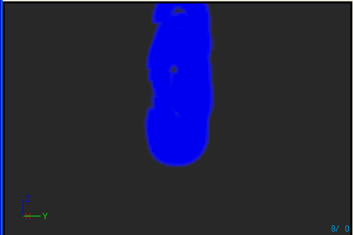
LOD 메서드 및 거리 세팅
게임내 파티클 시스템 LOD 제어는 두 가지 방법 중 하나로 가능합니다. 각 파티클 시스템 안에 있는 열거형 LODMethod 에 그 결정 방식이 제공되어 있습니다. 처음 허용되는 값은 Direct 직접 모드로, LODMethod 속성 값 PARTICLESYSTEMLODMETHOD_DirectSet 를 가리킵니다. 이 모드가 선택되면 파티클 시스템은 거기에 설정된 LOD 레벨을 사용합니다. 이는 game-spawned 이펙트에 의도된 것으로, 필요에 따라 그에 적절한 레벨이 설정될 것으로 간주합니다. 둘째로 허용되는 값은 Automatic 자동 모드로, LODMethod 속성 값 PARTICLESYSTEMLODMETHOD_Automatic 를 가리킵니다. 이 모드가 선택되면 파티클 시스템은 스폰 시간에 활용할 LOD 레벨을 결정할 것이며, 루핑 이펙트에 대해 루프될 때도 마찬가지입니다. 레벨은 카메라와의 거리 계산을 통해 LODDistances 배열 내 적절한 레벨을 찾아보아 결정됩니다. 시스템은 배열 내 항목 값 이상의 거리에 맞는 레벨을 선택합니다. 다음 이미지는 우리 파티클 시스템 예제의 속성 창 모습을 나타냅니다: LODDistances 속성 창 이 예제에서 LOD 0 (최고) 는 이미터와 카메라의 거리가 [0..1249] 유닛 범위에 있을 때 사용됩니다. LOD 1 은 [1250..1874], LOD2 는 [1875..2499], LOD3 은 2500 유닛 이상일 때 사용됩니다.
LODDistanceCheckTime 은 자동 모드로 설정된 각각의 ParticleSystemComponent 가 실행시간에 LOD 결정용 거리 계산을 얼마나 자주 할 것인지 (초 단위로) 설정하는 데 사용됩니다. 이 경우 레벨에 있는 파티클 시스템의 각 인스턴스는 0.1 초마다 거리 검사를 할 것입니다.
이 예제에서 LOD 0 (최고) 는 이미터와 카메라의 거리가 [0..1249] 유닛 범위에 있을 때 사용됩니다. LOD 1 은 [1250..1874], LOD2 는 [1875..2499], LOD3 은 2500 유닛 이상일 때 사용됩니다.
LODDistanceCheckTime 은 자동 모드로 설정된 각각의 ParticleSystemComponent 가 실행시간에 LOD 결정용 거리 계산을 얼마나 자주 할 것인지 (초 단위로) 설정하는 데 사용됩니다. 이 경우 레벨에 있는 파티클 시스템의 각 인스턴스는 0.1 초마다 거리 검사를 할 것입니다.